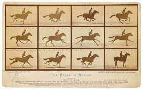

117. The Horse in Motion. Edweard Muybridge. 1878 CE Albumen print.
- Patronage
- Hired by Leland Stanford to settle a bet to see if a horse’s four hooves could be off the ground at the same time during a natural gallop
- Technique
- The photographer used a device called a zoopraxiscope to settle the bet
- Cameras snap photos at evenly spaced points along a track, giving the effect of things happening in a sequence
- For the time, it was very fast shutter speeds, nearly 1/2000th of a second
- Photography now advanced enough that it can capture moments the human eye cannot
- These motion studies bridge the gap between still photography and motion pictures
- Content
- One photograph with sixteen separate images of a horse galloping
- Images could be played in a sequence to stimulate motion pictures